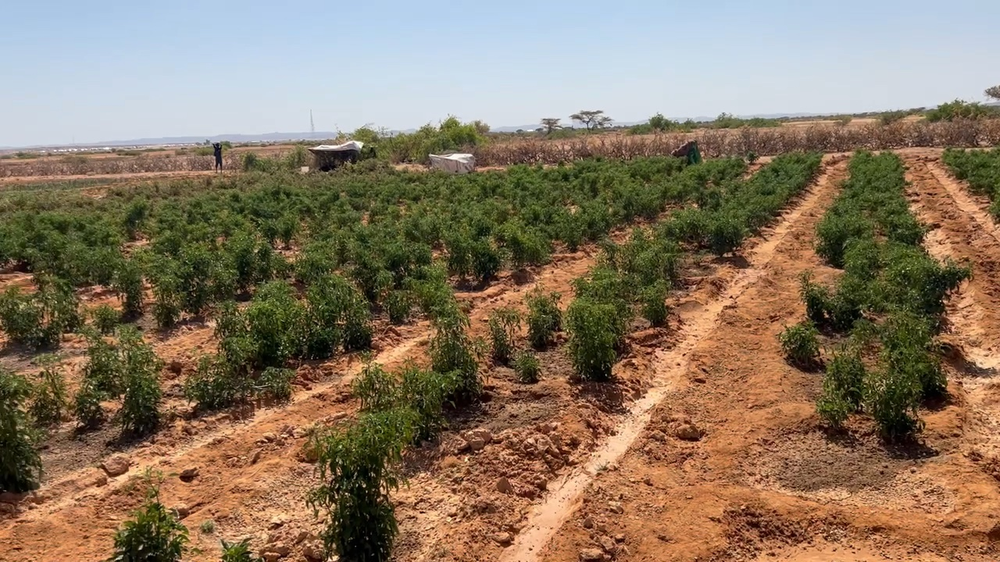

October 5, 2026
Green Where the Maps Say Desert
Farms outside Las'anod, built without a donor, a workshop or a logframe

I drove past land at Adhicadeeye, outside Las'anod, that every map calls desert. Semi-desert at best, ground that has only ever grown grazing for camels and goats. This time it was green.
Young men with their own Somali roots, many of them worn down by years in the fuel trade across East Africa, came back and started farming it. Solar panels and diesel generators pull water up from two hundred feet below ground. Tomatoes, green peppers, watermelon. Most of the labour is young people of Ethiopian heritage who crossed into the region looking for wages, resting under thin bushes when the heat gets unbearable, because there is barely a structure on the plot besides one small hut.
No donor funded this. No NGO ran a workshop on it. Nobody wrote a logframe, set a results framework, or picked a phase out date. A handful of people with a little capital and a stubborn idea decided the ground could do more than it was doing, and it did more.
I can speak to this from inside it. I sat in the ministry meetings where we debated how to “build resilience” in communities that were already building it themselves, faster than our programs could ever design for. The gap out there was never ideas, or willingness. It was water, power and a market. Everything else, people supplied on their own.
Who is waiting on a workshop to tell them that?
Laabta u Fura WB.
Responses
Corrections, counter-arguments and first-hand accounts are welcome. Comments are read before they appear.